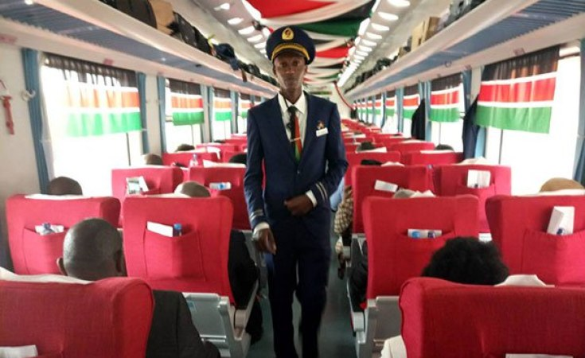

Standard Gauge Railway & Future Railway Projects
Project Progress
65%
Phase 2 Ongoing
SGR Key Facts
- East Africa's largest infrastructure project
- Modern railway with 25-ton axle load capacity
- Design speed: 120km/h (freight), 150km/h (passenger)
- Reduced Nairobi-Mombasa travel time from 12hrs to 4.5hrs
Current Operational Sections
Phase 1: Mombasa-Nairobi (472km)
Phase 2A: Nairobi-Naivasha (120km)
Train Services
Passenger: 4 daily intercounty trains
Freight: 8 daily freight trains
Capacity: 1,260 passengers per train
Cargo: 216 TEUs per freight train
SGR Route Details

Mombasa Terminus
Main SGR hub with customs clearance facilities

Nairobi Terminus
Connects to meter gauge and bus rapid transit

Voi Station
Key junction for future Tanzania connection

Naivasha ICD
Inland Container Depot serving Great Rift Valley

Freight Service
Moving 40% of Mombasa port cargo

Madaraka Express
Over 5 million passengers carried since 2017
Key Stations
- Mombasa Terminus (Coastal Region)
- Mariakani (Kilifi County)
- Voi (Taita Taveta)
- Mtito Andei (Makueni)
- Emali (Makueni)
- Kibwezi (Makueni)
- Nairobi Terminus
- Naivasha ICD
Future Railway Projects
Planned Extensions
Phase 2B: Naivasha-Kisumu-Malaba (270km)
Phase 3: Kisumu-Uganda Border (107km)
LAPSSET: Lamu-South Sudan-Ethiopia
Metro Systems
Nairobi Metro: 5-line urban rail network
Mombasa Monorail: Proposed 42km system
Modernization Projects
- Meter Gauge Railway rehabilitation (KSh 3B)
- Commuter rail expansion in Nairobi
- Nairobi Central Station redevelopment
- Automated signaling systems
Passengers Carried
5.2M+
+1.3M in 2023
Freight Tonnage
7.8M tons
Jobs Created
46,000
Economic Impact
KSh 200B+
Operational Efficiency
- 95% on-time performance
- 60% reduction in cargo transit time
- 40% of port cargo now on SGR
- 80% customer satisfaction rate
Railway Development Timeline
Key milestones in Kenya's railway modernization:
2014
SGR Construction Begins
Mombasa-Nairobi groundbreaking
2017
Phase 1 Operational
Madaraka Express launched
2019
Nairobi-Naivasha
Phase 2A completed
2020-2024
Naivasha-Kisumu
Phase 2B construction
2025-2030
Regional Integration
Connections to Uganda and Tanzania
Key Features:
- Chinese financing (Exim Bank)
- Built by China Road and Bridge Corporation
- 5-year operations contract with China
- Kenyan crew training program
78,542Likes
3,210 Dislike
15,876 comments